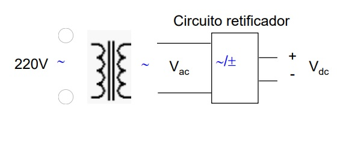

eletrônica básica
FONTES DE ALIMENTAÇÃO AC-DC
Em uma fonte de alimentação DC a partir de uma fonte AC, irá retificar tensões que trabalham a 60 Hz (senoidal). Estas tensões podem ser 220V, 110V, dependendo da região.
Os equipamentos eletrônicos geralmente trabalham a baixa tensão, então temos que usar um transformador para
reduzir da tensão alternada da rede, antes de fazer a retificação.>

Vídeo Relacionado: Como Funciona Uma Fonte de Alimentação Linear